In this demo, we will show you how to use amdb by constructing and analyzing 2-dimensional R-trees. We will first show how to bulk-load indices with gistcmdline, and then show how to navigate and inspect their structure using amdb. Then we will show how to set breakpoints and step through tree commands. Finally, we will compare the range query performance of partially insertion loaded 2-dimensional AMs: an R-tree versus an R*-tree. We will show how to compute analysis metrics for a query workload presented to these trees using gistcmdline. These metrics can then be browsed and visualized in the context of the search tree using amdb.
This demo will require about 5 MB of scratch space. Moreover, the final analysis portion of the demo only has been tested on Sparc Solaris platforms since it requires the use of hMETIS.
First, we will need a data file containing the points we want to place in the leaf level of the R-tree. We have provided two example data files 2d-uni-40000 and 2d-clust-2500 in the amdb/doc/demo directory containing 40,000 uniformly distributed and 2,500 clustered (100 uniformly distributed centers each with 25 points clustered around them) 2-d point-value pairs respectively. Each line of the file contains a single point-value pair formatted as "coor1 coor2 ..." "value". A sample from one of the files is shown below.
... "7.80455 4.80426" "155" "5.36057 4.84116" "155" "10.4321 4.85839" "155" "9.1856 4.91932" "155" ...
Make the driver program gistcmdline accessible from your PATH variable; it is located under libgist/src/cmdline. Start gistcmdline from the amdb/doc/demo directory and type help. It should provide a summary of the commands and libgist extensions gistcmdline supports.
The create command is used to create and bulk-load an index. Type (or run build-script in the amdb-demo directory, if you already know how to use gistcmdline)
libgist> create rt-2-uni rt_point_ext 2d-uni-40000 1.0to create a point R-tree index, rt-2-uni, bulk-loaded with point-value pairs from the 2d-uni-40000 data file using 100% fill-factor for the leaf pages. The program returns to the standard output the point-value pairs loaded into the index. You can turn off this output by typing
libgist> set echo 0Likewise, create an R-tree and R*-tree index for the clustered distribution of points. These two indicies will be used in the analysis section of the demo.
libgist> create rt-2-clust rt_point_ext 2d-clust-2500 1.0
libgist> create rs-2-clust rstar_point_ext 2d-clust-2500 1.0
Exit gistcmdline by typing quit. The commands should have created three index files rt-2-uni, rt-2-clust, and rs-2-clust in the amdb/doc/demo directory.
The data items in the data files are sorted in the order the leaf level pages are to be filled. The bulk-loading routine simply scans the input file and places data items into leaf pages as they appear, creating internal pages as necessary. Carriage returns in the data file force the bulk-loading routine to begin filling a new leaf page. The leaf and internal pages are packed as close as possible to the specified fill-factor. The points in the example files are arranged so as to fill the leaf pages according to the STR technique [1] which partitions the data points into iso-oriented tiles.
Note, indices can be created in other ways as well. One can insertion load an index through gistcmdline or through amdb. Indices can be created by other programs which call the libgist library routines. Amdb can be used to inspect, debug, and analyze any index created with libgist.
Start amdb from amdb/src directory by typing gmake run. (Remember to have the LIBGISTHOME and LD_LIBRARY_PATH variables set correctly, see installation instructions). Amdb should appear containing an empty Console window.
Open the R-tree filled with uniformly distributed 2-d points by selecting Open from the File menu, and selecting rt-2-uni in the file chooser. You will have to change directories and find the index file. Go up two levels by clicking twice on the icon. Then double click on the doc directory, double click on demo, and finally double click on rt-2-uni.
A window named Tree View should appear showing a white box labelel with a "1" representing the root node of the opened index (You may have to move the Console window). Tree View is a visualization tool for exploring the structure of the index. It allows you to navigate and examine various paths and subtrees of interest within an overwhelming high-fanout search tree.
Let's explore the index structure starting from the root node. Click on the root node. Clicking on a node "open"s it and displays a container below it, connected by a line, containing its children. The display should show the root node has two children, nodes 227 and 228. Each node is labeled with a number for reference. Click on node 227. Notice the container holding the children of node 227 has a scrollbar on top. Since node 227 has a high fan-out, not all of its children can be displayed at once given the screen space. Thus, the scrollbar can be used to scroll through the children of node 227.
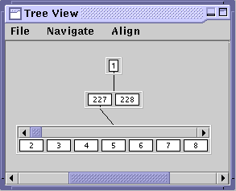
Clicking on an "open" node will close the subtree shown below it. Try clicking on the root node again.
If nothing happens when you click on node, then that node is a leaf node. For example, node 2 is a leaf node. Play around with Tree View until you feel comfortable with its operation. Note Tree View is resizeable and scrollable in case the explored paths and subtrees cannot fit within the window.
Once you have found an individual node of interest with Tree View, amdb allows you to visualize or dump its contents. Right click on node 3, and from the popup menu select Node View. A window should appear titled Subtree View: 3 : all. This window displays the points contained in node 3 and can be resized as desired. You can also view the contents of a subtree below a specific node. For example, right click on the root node, and select Subtree View - 2. A window tilted Subtree View: 1 : 2 should appear showing the contents of all nodes in the subtree of height 2 from (and including) the root node and below. Thus, it shows the bounding rectangles of the children of nodes 1, 227, and 228. For further clarification of the items displayed in the subtree views, you can use the highlight options.
Right click on node 228, and select Subtree View - 1 to see the contents of node 228. Again, right click on node 228, and select Highlight Subtree - Subtree View: 1 : 2. This should highlight all the bounding rectangles and data items within the nodes below (and including) node 228 that are rendered in the selected subtree view, Subtree View: 1 : 2. Note the items highlighted in Subtree View: 1 : 2 are the bounding rectangle of node 228 and the contents of node 228, as shown in Subtree View: 228 : 1.
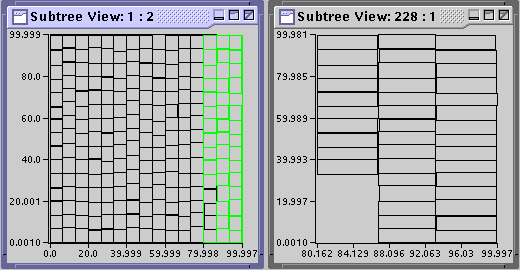
Middle clicking or right clicking and selecting Highlight Path on node 3 will highlight the path from the root to node 3. If any subtree view is displaying the bounding rectangle of a node along the highlighted path, then the rectangle within the view will be highlighted. Using the highlightling features, you can figure out which bounding rectangles correspond to which nodes. Play around with the Subtree View and highlight options until you feel comfortable with their operation.
A word of caution is necessary concerning the Subtree View option. Currently, if the subtree visualized includes more than 30 nodes, refreshing the subtree view can become terribly slow causing amdb to appear to be hung. As a rule of thumb, do not open subtree views of depth higher than 1 or 2.
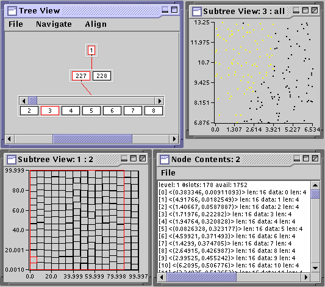
With node view you can also visualize how the contents of a node might be separated when it splits. Right click on node 3 and select Highlight Split. In Subtree View: 3: all, data items will be highlighted to show the split. Such a visualization is immediately useful for debugging the pickSplit() method. The node and subtree views are user extensible so that they can be used for a variety of data types.
Finally, the Node Contents option gives a textual dump of the contents of a node. Right click on any node and select that option. Play around with these features until you feel comfortable.
Select Show Global View from the Navigate menu in Tree View; then select Tile All from the Align menu. A window titled Global View should appear. It projects the entire tree onto a triangle whose base is adjustable via the slider at the top and whose height is adjusted by resizing the Global View window. Select Slot Count from the Tree Stats menu and adjust the slider to about 1/4 of the total. The slot counts of the nodes are depicted by color. (These colors can be changed by choosing Choose Palette from the File menu in Tree View. Extra palettes are in the libgist\etc\palette directory.) The colors map to the relevant statistic according to the color scale on the left side of Tree View. You can click on an area of interest in the global view and a path to the closest node will be displayed in the tree view.
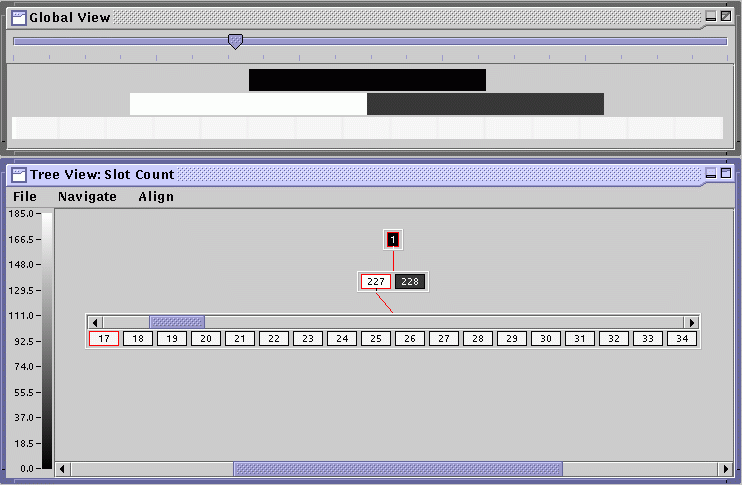
The utility of this view is best demonstrated when trying to visualize the analysis metrics, so we postpone a detailed discussion until later.
First, we will show how to issue AM commands with amdb by executing a nearest neighbor search on the R-tree which indexes the clustered distribution. Open the rt-2-uni index if it is not already opened. From the Ops menu select Search. In the dialog box that pops up, type ~ p 46 46 in the Query field and type 10 in the Retrival Limit. This finds the 10 nearest neighbors of the point (46,46). The results will appear in the Console window. Similarly, you can insert into and delete from the index.
To suspend execution of a command and step through it we first need to set a breakpoint on some event. There are several types of node-oriented events that amdb generates. We will set a breakpoint on the traversal of the root and step through the search we executed above.
Go to the Debug menu and select Breakpoints. A dialog window should appear. Create a new breakpoint by selecting New; a new breakpoint with ID=0 should appear. The Event column specifies the event on which breakpoint is triggered, and the Node column associates the event with a particular node or all node if unspecified. Select Node Traversal in the Event column and type 1 in the Node column to set a breakpoint on the traversal of the root. Click Ok to register the new breakpoint.
Now reexecute the previous search to find 10 nearest neighbors of the point (46,46). The Step and Continue controls under the menu bar should be enabled, and the root node should be highlighted. Step allows you to move from event to event while Continue moves the search to the next breakpoint. Step through the search. Tree View should highlight the path to the current node and the Console window should give you a status of your progress. This search will visit the following nodes: 1, 227, 98, 114, and 113.
Amdb conveniently permits breakpoints on many different node-oriented actions to avoid stepping through tediously long commands. Go to the breakpoint table once again and create a new breakpoint on an Item Insertion event (remember to hit Ok). Open a Node Contents and Node View window for node 3. From the Ops menu select Insert and type 0.05 7.0 in the Key field and 1999 in the Data field. Click on Ok. This command will insert a new point (0.05, 7.0) located in the lower left hand corner of Subtree View: 3 : all. Using Step would trace the insertion step by step, but since we want to jump directly to that point, click Continue. This takes us directly to the next breakpoint event which is an insertion. The Console window will indicate that an item is ready to be inserted in node 3 and a path to it will be highlighted in Tree View. Use Step to complete the insertion, and note the node contents and node view for node 3 will reflect the change (a point in the lower left corner will appear in the node view).
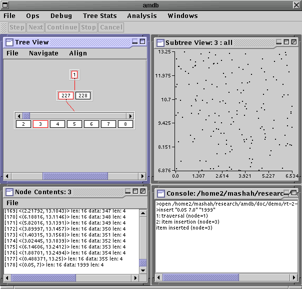
These debugging and visualization features aid in finding bugs in the AM implementation, but offer little information into the performance characteristics of the AM desgin. Amdb analysis features provide such insight for a specific query workload.
First, we need complete the construction of the R-trees by inserting 2,500 more points from the same distribution. We have provided two files 2d-clust-ins.rt and 2d-clust-ins.rs which contain commands to insert the extra 2,500 points in rt-2-clust and rs-2-clust. Take a look at the files if you are curious. Then execute the following from the amdb/doc/demo directory.
amdb/doc/demo> gistcmdline < 2d-clust-ins.rt
amdb/doc/demo> gistcmdline < 2d-clust-ins.rs
To compute the analysis, we need a couple of input data files. First, we need a query workload. A sample workload can be found in 2d-clust-queries in the amdb/doc/demo directory. It contains square containment queries centered on the points from the clustered distribution. For the analysis of the penalty() method, which guides the insertion routine for GiST trees, we need a set of candidate keys that could be inserted. The 2d-100.keys file in the amdb/doc/demo directory contains an example of a hundred candidate keys.
The script files rt-clust-anl.scr and rs-clust-anl.scr contain a sequence of commands to gistcmdline which will create analyses for the respective search trees using the queries in 2d-clust-queries and the keys in 2d-100.keys. To compute some of the analysis metrics, gistcmdline requires the use of hMETIS to generate an optimal clustering of data items withing leaf pages. Thus, before we do anything, make sure hmetis is accessible from the PATH variable. Then execute the following from the amdb/doc/demo directory.
amdb/doc/demo> gistcmdline < rt-clust-anl.scr
amdb/doc/demo> gistcmdline < rs-clust-anl.scrEach of these will take several minutes to compute. Once completed, two analysis files rt-2-clust-anl and rs-2-clust-anl will be created in the amdb/doc/demo directory. They contain a snapshot of the respective index at the time the analysis was generated, profiling information from the workload, and the analysis metrics.
Start amdb, if not already started, and select Open Analysis from the Analysis menu. Open the rt-2-clust-anl analysis for the R-tree. (Again you will have to go up two levels, and into the doc/demo directory). Start another amdb, and open the rs-2-clust-anl analysis for the R*-tree. In both amdb sessions, open the workload stats dialog by selecting Workload Stats ... from the Analysis menu. This dialog intially shows the parameters of the analysis we computed, the number of queries, the target utilization we specified (80%), etc. Click on the Leaves tab in both dialog boxes.
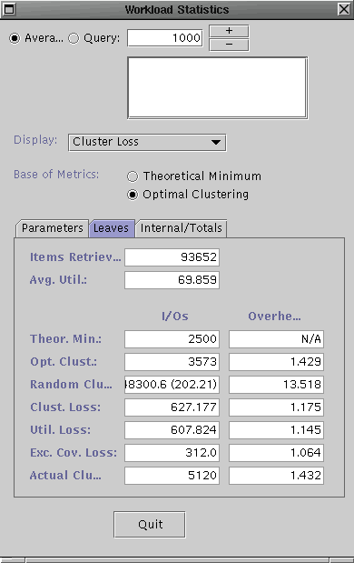 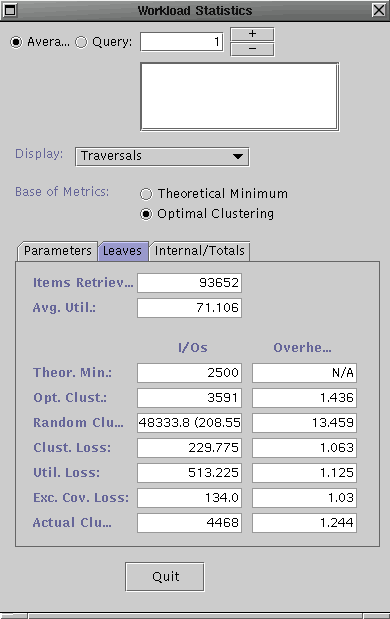
The dialog boxes should look similar to the ones shown above. The left one contains the workload statistics for the R-tree and the right one is contains the statistics for the R*-tree. For the purposes of this demo, we will explain what some of the metrics to get an idea of their utility but we will spare you the details of every number shown.
The metrics currently shown are the aggregate measures for the entire query workload. Since the Leaves tab is selected, these metrics only consider the I/Os performed for the leaf level pages of the search tree. The left I/Oscolumn indicates the number of I/Os for each of the categories, while the right Overhead column shows the ratio in comparison to the workload-optimal tree. The Actual Clustering category (bottom) inidicates the number of leaf level I/Os perfomed for the tree for the query workload. The Optimal Clustering indicates the number of I/Os required at the leaf level if the data items were optimally clustered into the leaf pages, i.e. it corresponds to an acheivable minimum. The optimal clustering is computed using hMETIS. The Excess Coverage Loss indicates the number of I/Os performed at the leaf level which returned no items. These empty accesses are due to the excess coverage of the bounding predicates (BPs) of the leaf pages. Note, the R-tree has a much higher excess coverage loss than the R*-tree indicating that the latter's BPs do a better job of describing the data in the leaf pages. Since both trees use MBRs for the BPs, this means that this advantage is simply due to better placement of data items into leaf pages leading to less overlap. That is, the R*-tree should have better clustering.
The remaining I/Os (actual - exc. cov.) are used to compute the clustering and utilization loss. The Clustering Loss is the number of additional I/Os performed over the optimal clustering, if the accessed pages had been packed to the target utilization of 80%. After removing the clustering loss, the remaining additional I/Os performed (actual - exc.cov - clust. loss - opt. clust), are due to under utilization of the leaf nodes; thus, it is the Utilizaiton Loss. The sum of the optimal clustering and the losses should add up to the actual I/Os performed. Note, the R*-tree does do a better job of clustering co-retrieved data items than the R-tree.
The Internal/Totals section shows the metrics for the internal levels of the search tree. We cannot compute the Clustering Loss for the internal levels, but the Excess Coverage and Utilization losses are shown.
The workload metrics are futher broken down for each node in the tree and for each query. To see the metrics projected onto the search tree, you simply need to select the appropriate metric from the options in Display list on the Workload Statistics dialog. Select Excess Coverage Loss from the Display tab for the R-tree. Now open up the Global View from the Navigate Menu in Tree View and select Tile All from the Align menu. In the global view, set the slider all the way to the right.
Notice that one leaf node has an unusually high excess coverage loss; it is colored white. Click on that area in the Global View and the Tree View will show a path to node 18. Open a node view on the root node (only one level). Notice, node 18 has high overlap with another bounding rectangle, which happens to be for node 10. Open node views on node 18 and node 10. You will find that node 18 has one outlier which makes its MBR large, empty, and overlapping with node 10, causing the high excess coverage loss. Play around with other metrics. The Global View in combination with the metrics dialog is useful for "drilling down" and finding causes of performance losses which may lead to insights into design flaws.
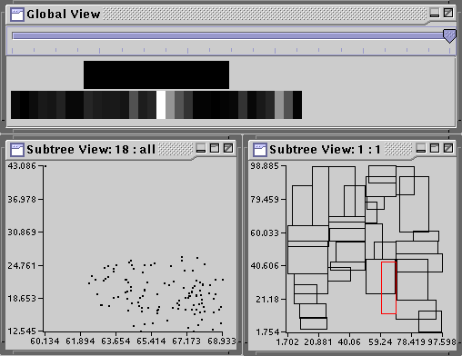
The metrics can also be visualized on a per query basis by selecting the Queries radio button on the Workload Statistics dialog and selecting the appropriate query in the field. Once you are finished, select Quit to exit the dialog.
Select Split Stats ... from the Analysis menu for both the R-tree and the R*-tree. ( if that does not work, select Workload Stats ... and quit from the Workload Statistics dialog. Apologies for the bug.) They should look similar to the following (R-tree on left and R*-tree on right).
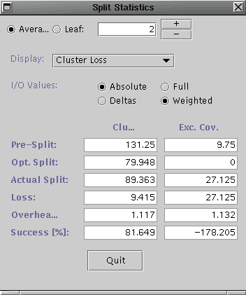 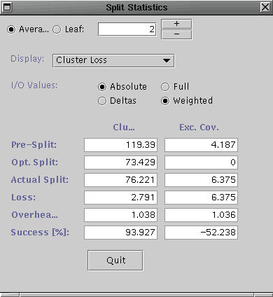
Notice the aggregate clustering loss for the R*-tree splits is much lower than that of the R-tree splits (and hence the higher success rate). This indicates that the pickSplit() method of the R*-tree is at least partially responsible for the improvement in clustering for the given query workload.
The penalty metrics assess the quality of the penalty() method. Each candidate key is inserted into the tree top-down and compared with the optimal insertion (again in the context of the query workload). In terms of excess coverage, the optimal insertion is the one which results in no excess coverage, so the point of comparison is 0 excess coverage. In terms of clustering loss, the optimal insertion is one which minimizes the added clustering loss. Likewise, the difference in performance is recorded on a per candidate key basis and summarized for all leaves.
Select Penalty Stats ... from the Analysis menu for both the R-tree and the R*-tree. They should look similar to the following (R-tree on left and R*-tree on right).
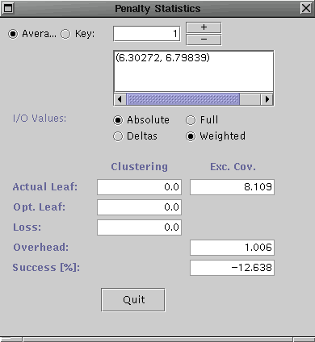
Notice, for the candidate key insertions, the clustering did not change much for either tree. However, the excess coverage loss is better for the R*-tree that the R-tree. This indicates the insertion guiding routine for R*-tree is better for the given workload/candidate key set combination.
You should now be familiar with the capabilities of amdb. More detailed descriptions of the features and metrics are available in the user manual. Finally, there is a paper available off the GiST web site which justifies the basis of the analysis framework and explains how the analysis is computed.
Comments, questions and suggestions may be directed to gist@postgres.berkeley.edu
Last modified: $Date: 2000/03/15 00:26:52 $ by $Author: mashah $.